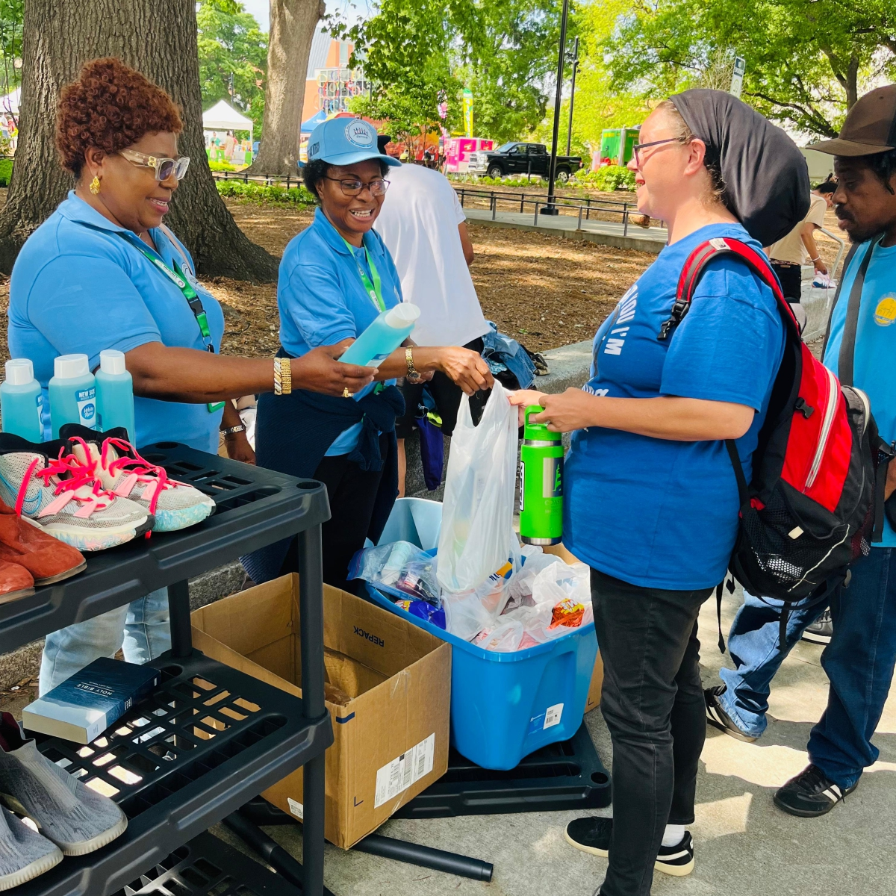

Mount of Grace Foundation bridges Nigerian communities with the resources, care, and opportunity they deserve — driven by diaspora compassion and grounded in service.
Founded in 2011 by Nigerian-American community leaders, Mount of Grace Foundation exists to close the gap between need and opportunity across Nigerian communities — both at home and in the diaspora.
We believe every child deserves an education, every mother deserves dignified healthcare, and every family deserves the chance to thrive. Our work is practical, transparent, and deeply human.
Our full story →
Scholarships, school supplies, and mentorship for students across underserved communities in Nigeria.
Learn more →Free medical camps, maternal health support, and essential medicines reaching rural communities.
Learn more →Vocational training, microfinance, and leadership programs helping women build sustainable livelihoods.
Learn more →Providing safe, temporary shelter and transitional housing for the homeless — working alongside community volunteers to restore safety, warmth, and dignity to those with nowhere to turn.
Learn more →Before Mount of Grace, I could not afford to keep my children in school. Today my daughter is studying engineering in Lagos. I never thought this was possible for our family.
The medical outreach came to our village when my mother was critically ill. The care she received saved her life. Words cannot express our gratitude.
The vocational training gave me a trade and confidence. I now run my own tailoring business and employ two other women from my community.
Whether you give, volunteer, or spread the word — every act of solidarity moves us closer to a world where every Nigerian community can thrive.